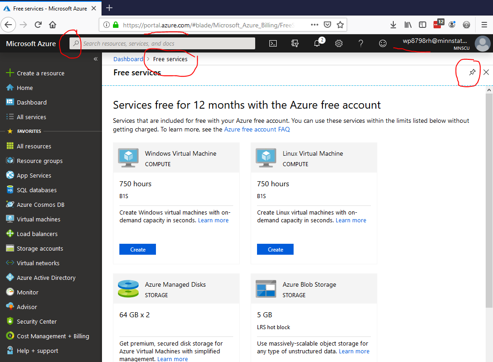

Active profile: use your course-specific Hermes profile mis362.
mis362
Hermes session:
First use: /new Summative03 Return later: /resume Summative03 When finished using Hermes: /quit
Hermes use is required for one meaningful checkpoint in this assignment. GenAI02 introduced Hermes Agent, and these early assignments are designed to build the habit of using an agent deliberately without outsourcing the work.
Direct Mode: Use the required course software yourself. Direct Mode may be used for routine mechanical steps, but complete the Hermes checkpoint below at least once.
Required Hermes checkpoint: Before finalizing your hardware or infrastructure recommendation, ask Hermes to identify comparison criteria and one assumption that needs independent verification. Make the final selection yourself.
Hermes may help you understand, plan, analyze, troubleshoot, and review. It does not replace the required course software, independent verification, Digital Artifact Notebook evidence, or your final business judgment. Do not add a Hermes screenshot merely to prove use unless the assignment specifically asks for one.
Workstation tip: when useful, keep Hermes Agent open on one monitor and the assignment, browser, Excel, Visual Studio, Access, or other course software on another monitor so you can compare instructions, agent advice, and actual results.
Safety and verification: use only Hermes capabilities you have already configured in the completed GenAI assignments. Do not place passwords, API keys, private information, or restricted data in prompts or course-agent files. Treat agent output as a candidate solution until you verify it with the assignment requirements, source data, calculations, software output, or another appropriate source.
Use this sequence as the main checklist for completing the assignment.
WebPage.pdf
.pdf
The goal of this assignment is to evaluate how organizations select, use, and manage computer hardware, servers, cloud platforms, and supporting infrastructure.
After completing this assignment, you will be able to:
Primary course learning-outcome alignment: CLO3, CLO11, and CLO12.
Questions 1 through 6 require concise answers of no more than 500 characters. Respond directly to every part of each question. The Final Assignment Reflection allows a longer response.
Hermes Agent in the mis362 profile is the default AI-assisted workflow for this assignment. The MIS362 Copilot/M365 course agent, course materials, reliable external sources, teaching assistants, and the instructor remain available as secondary resources. Verify AI-generated information before using it.
Recommended Hermes prompt: I am completing MIS362 . Create a concise checklist for the assignment. Identify each required screenshot, explain what it should show, and remind me how to verify my work.
I am completing MIS362 . Create a concise checklist for the assignment. Identify each required screenshot, explain what it should show, and remind me how to verify my work.
The components of a computer are similar, but the number of possible combinations, from small systems to massive data center, are almost limitless.
Organizations need to balance purchasing newer, more energy efficient computer hardware with purchase price (and other costs to be discussed in later chapters, such as software and training). Visit the PC Part Picker website, and use the System Builder to configure a desktop computer system for an organization for which you would like to work. As you choose the components, consider the tradeoffs in computing power, cost and performance that you are making.
After completing your build, answer each question concisely, using no more than 3 sentences and 500 characters. (50) Question 1 What was the total cost? Your answer:
(50) Question 2 What was the wattage? Your answer:
(50) Question 3 What decision or decisions were the most difficult to make? It is acceptable if your answer differs from those of your classmates; focus on what you learned. Your answer:
Consider the selection process. What type of factors, training or experience could benefit organizations that must continually consider purchasing new computer equipment? (50) Question 4 Briefly identify ways an organization can improve its computer-systems purchasing process. Consider changing technology, training, employee needs, competition, and other relevant factors. Your answer:
Screenshot A. Use the Windows Snipping Tool to make a screenshot of your System Builder results.
Paste Screenshot A directly into Section 1 - Task Evidence on your OneNote page named . Label it Task Evidence A - .
Do not submit only a file icon. The screenshot must be visible and readable in the final .pdf file.
Investigate different types of computer systems. Then find a recent listing of the most powerful operational supercomputers. Hint: search for 'top 500 supercomputer'
Consider the purpose(s) of these devices.
(50) Question 5 What was the most unique or surprising use of a supercomputer that you encountered? Your answer:
Screenshot B. Use the Windows Snipping Tool to capture the most useful portion of your research source showing the supercomputer list. Include enough source context that another person can understand what the screenshot shows.
Paste Screenshot B directly into Section 1 - Task Evidence on your OneNote page named . Label it Task Evidence B-.
Investigate Server Farms, Data Centers and Green Computing. Log into the Microsoft Azure Portal. Username: StarID@go.minnstate.edu Password: WSU network password
Username: StarID@go.minnstate.edu
Password: WSU network password
Become familiar with the interface. Note- the interface is updated regularly so it may look different than the following.  Azure Portal Use the Azure search bar to locate the relevant free-services or IoT service options. Because the Azure interface changes regularly, the exact labels may differ from the example. Under 'Always Free Services' investigate the creation of a 'Microsoft IoT Hub' or similar service by clicking 'Create'. Create a new or select an existing Resource Group. Choose an appropriate region for your Hub. Give your IoT Hub or service an appropriate name, such as , then click 'Review+Create' .

Reflect on this experience, and what you have found during your investigation. (50) Question 6 Briefly explain one benefit an organization of interest to you could gain by creating services on a platform such as Microsoft Azure or Amazon Web Services. Your answer:
Screenshot C. Use the Windows Snipping Tool to take a screenshot of the service you created Include enough source context that another person can understand what the screenshot shows. Note: do not worry if your deployment failed. Include your StarID in the upper right corner of the Azure portal page.
Note: do not worry if your deployment failed.
Paste Screenshot directly into Section 1 - Task Evidence on your OneNote page named . Label it Task Evidence C-.
Complete and publish the assignment before responding. Use your completed answers and evidence from the assignment to support your reflection.
Ctrl + P
(50 points) WebPage.pdf: The readable webpage printout is included in the Digital Artifact Notebook.
(50 points) D2L PDF submission: Upload .pdf to the matching D2L assignment folder.
(50 points) Home Page Hyperlink: Verify that this assignment is linked correctly from your course home page.
(50 points) Web Database Submission: Press the Submit button at the top or bottom of this page. Your answers are saved to the web database and sent for formative AI feedback.